158sigils
387phase versions
Sigil pool
Phase
Showing 158 sigils

Bear
承载Sigil Value 2
Carefree
逍遥Sigil Value 1
Disaster
厄劫Sigil Value 1
Dissipate Force
卸劲Sigil Value 1
Draw Dragon
画龙Sigil Value 2
Exchange
变换Sigil Value 1
Exorcise Evil
驱邪Sigil Value 1
Expand Vitality
扩生机Sigil Value 1
Guard Up
护体Sigil Value 2
Hexproof
辟邪Sigil Value 1
HP
生命Sigil Value 1
Immortal Trapping
困仙Sigil Value 2
Immovable
不动Sigil Value 1
Mechanism Assembly
机关组装Sigil Value 1
Mechanism Engine
机关引擎Sigil Value 1
Mechanism Shield
机关盾Sigil Value 1
Poison Tempering
淬毒Sigil Value 2
Prevent
预防Sigil Value 2
Regulate Breathing
调息Sigil Value 1
Sigil Enhancement
刻印强化Sigil Value 1
Smash DEF
碎防Sigil Value 1
Solidify Defense
固防Sigil Value 1
Speed
速度Sigil Value 2
Spirit Overflow
溢灵Sigil Value 3
Spirit Rune Mechanism
灵纹机关Sigil Value 1
Strengthen Fundamental Essence
固本元Sigil Value 2
Strong Attack
强攻Sigil Value 1
Suppress
压制Sigil Value 1
Surge of Divine Power
涌神力Sigil Value 1
Cloud Rise
云起Sigil Value 1
Cloud Sea Wandering Dragon
云海游龙Sigil Value 3
Clouds Gather and Stars Converge
云屯星聚Sigil Value 2
Concentrate on Formation
意守阵Sigil Value 1
Condense Sword Intent
凝剑意Sigil Value 2
Control Sword to Form Formation
御剑结阵Sigil Value 3
Earth Fiend
地煞Sigil Value 1
Flash Wind
闪风Sigil Value 3
Flying Fang
飞牙Sigil Value 2
Guard Delicate Bracelet
护玲珑Sigil Value 2
Harm the Body
伤其体Sigil Value 1
Hundred Birds
百鸟Sigil Value 1
Kunpeng
鲲鹏Sigil Value 2
Madness
狂念Sigil Value 1
Mechanism Sword - Shock
机关剑·震Sigil Value 1
Mechanism Sword - Slash
机关剑·斩Sigil Value 1
Mechanism Sword - Split
机关剑·裂Sigil Value 1
Mechanism Turtle
机关龟Sigil Value 1
Merge Fusion Style
融剑阵Sigil Value 2
Moon in Water
水中月Sigil Value 2
Necessity
无妄Sigil Value 2
Perch Egret
栖白鹭Sigil Value 2
Sip Spring Course Tea
饮道茶Sigil Value 1
Soft Heart
柔心Sigil Value 3
Spirit and Unrestrain
灵与狂Sigil Value 2
Spirit Slash
灵斩Sigil Value 1
Swing Sword to Split Heaven
荡剑开天Sigil Value 3
Sword Practice
练剑Sigil Value 1
Tread Spirit Clouds
踏灵云Sigil Value 2
Ward Spiritstat Shield
御灵防Sigil Value 1
Wield Flame Dance
舞狂炎Sigil Value 2
Zero Form
零式Sigil Value 1
Aggravate Internal Injury
溃其伤Sigil Value 3
Arrange Astral Hexagram
布星卦Sigil Value 2
Blood Plum
血梅Sigil Value 1
Brush Birdie Wind
拂清风Sigil Value 1
Capture Trapped Turtle
捉困鳖Sigil Value 2
Catch Cicada
捕蝉Sigil Value 3
Continue Heavenly Fate
续天命Sigil Value 2
Dark Star Soul Injury
黯星伤魂Sigil Value 1
Derive Star Point
衍星位Sigil Value 2
Divine Hexagram
占卦象Sigil Value 1
Divine with Lamp
卜灵灯Sigil Value 2
Fan Star-Moon Breeze
扇星月Sigil Value 2
Flame of Li
离之火Sigil Value 2
Gather Star Power
聚星力Sigil Value 1
Heavenly Axis Reflects Stars
天元映星Sigil Value 3
Hexagram Fall
落卦Sigil Value 1
Hide in Solitary Void
隐孤虚Sigil Value 2
Ko Threat Extension
引征Sigil Value 3
Mechanism Cat
机关猫Sigil Value 1
Mechanism Rat
机关鼠Sigil Value 1
Mechanism Snake
机关蛇Sigil Value 1
Mechanism Star Instrument
机关星仪Sigil Value 1
Ruthless
无情Sigil Value 1
Sacrifice to Thunder
祭雷Sigil Value 3
Shift Stars
移星Sigil Value 1
Shock Injury
震伤Sigil Value 2
Spring Return
逢春Sigil Value 2
Thunder Break
惊雷破Sigil Value 1
Thunderbolt
霹雳Sigil Value 1
Transform Star Spirit
化星灵Sigil Value 1
Trump Card
底牌Sigil Value 2
Yin-Yang
两仪Sigil Value 2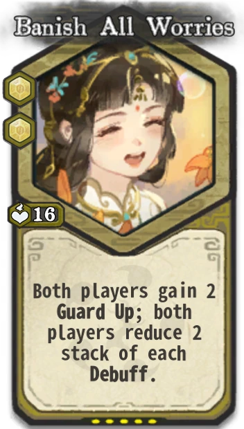
Banish All Worries
忘百忧Sigil Value 2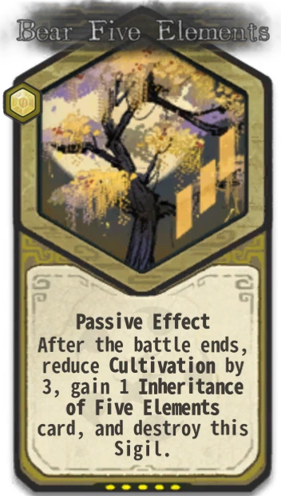
Bear Five Elements
承五行Sigil Value 1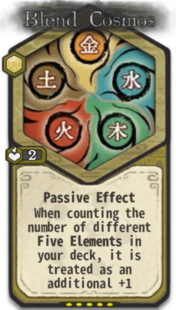
Blend Cosmos
融混元Sigil Value 1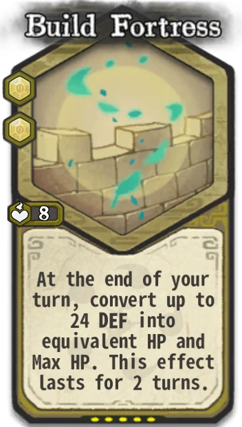
Build Fortress
筑城Sigil Value 2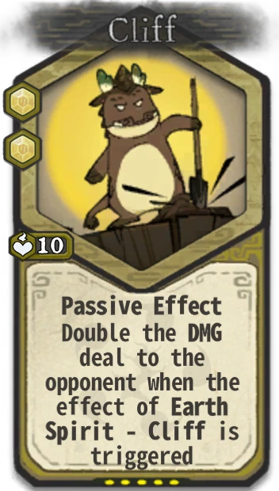
Cliff
断崖Sigil Value 2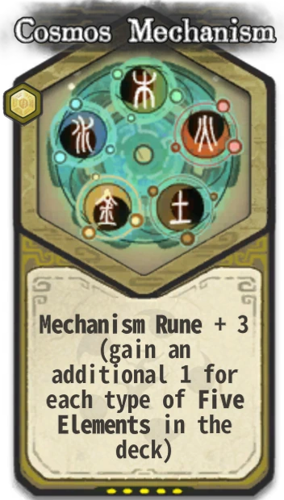
Cosmos Mechanism
混元机关Sigil Value 1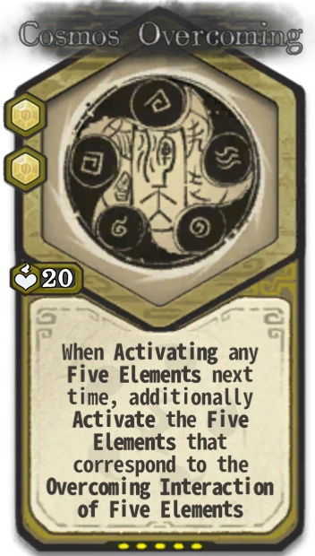
Cosmos Overcoming
浑天克Sigil Value 2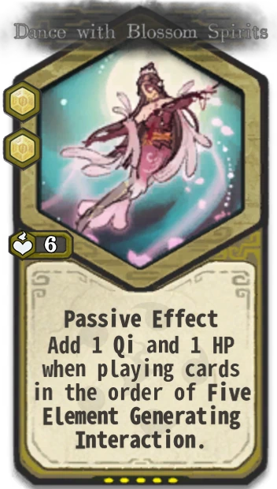
Dance with Blossom Spirits
舞花灵Sigil Value 2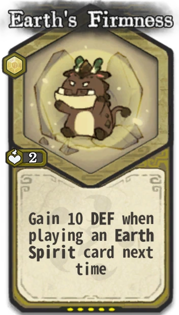
Earth's Firmness
土之固Sigil Value 1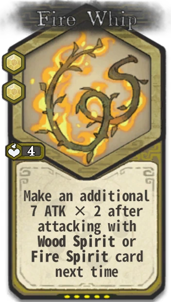
Fire Whip
火鞭Sigil Value 2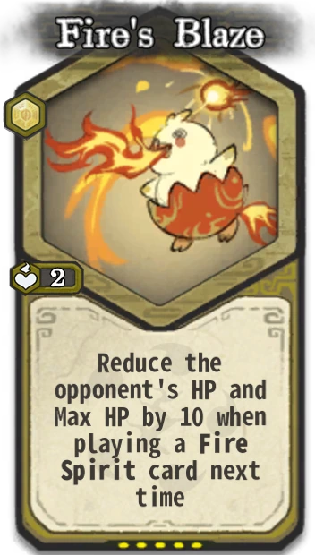
Fire's Blaze
火之炽Sigil Value 1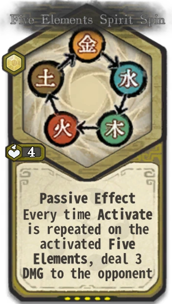
Five Elements Spirit Spin
五行灵旋Sigil Value 1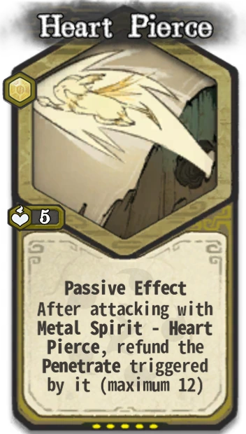
Heart Pierce
穿心Sigil Value 1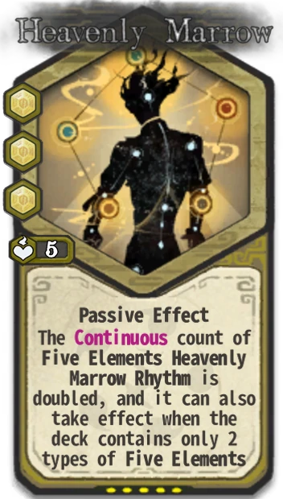
Heavenly Marrow
滴天髓Sigil Value 3Hot Sand
热砂Sigil Value 1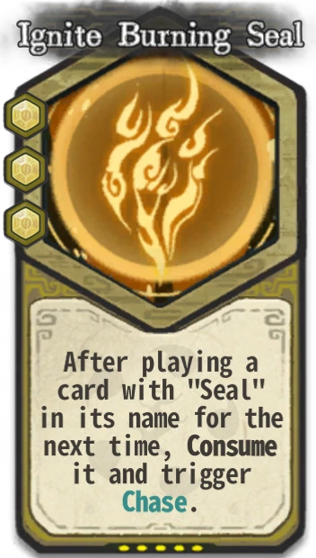
Ignite Burning Seal
燃咒印Sigil Value 3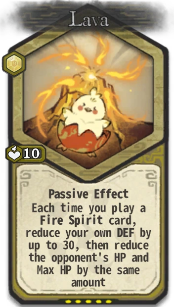
Lava
熔岩Sigil Value 1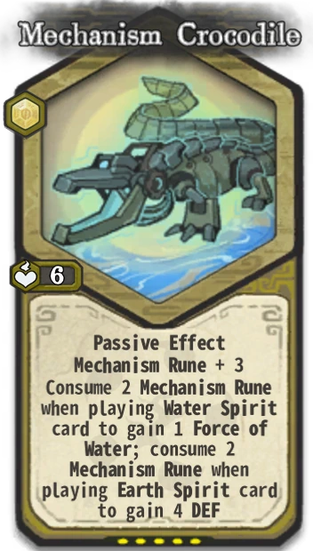
Mechanism Crocodile
机关鳄Sigil Value 1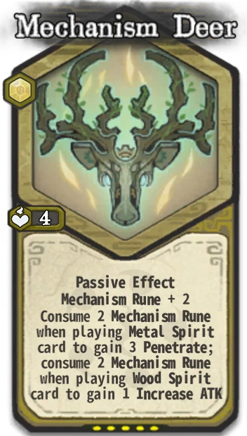
Mechanism Deer
机关鹿Sigil Value 1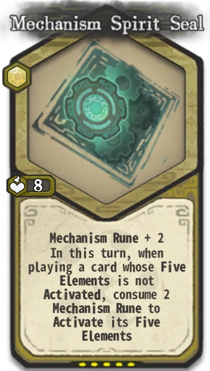
Mechanism Spirit Seal
机关灵印Sigil Value 1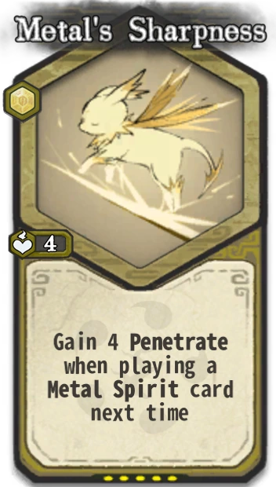
Metal's Sharpness
金之锐Sigil Value 1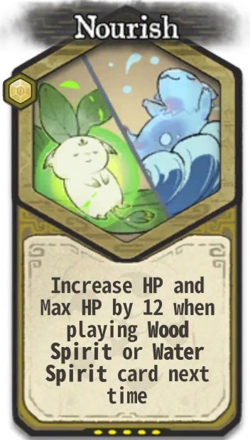
Nourish
滋养Sigil Value 1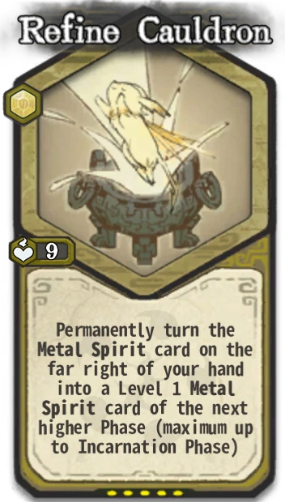
Refine Cauldron
炼鼎Sigil Value 1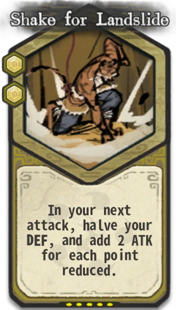
Shake for Landslide
震山崩Sigil Value 2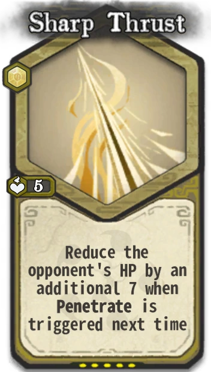
Sharp Thrust
锐之刺Sigil Value 1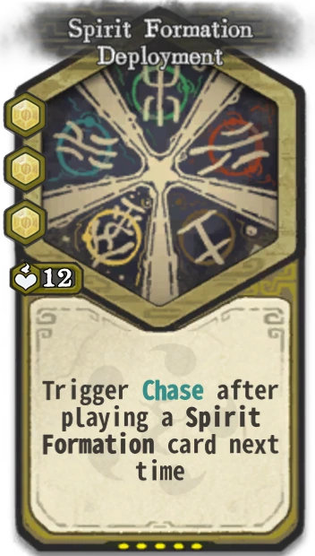
Spirit Formation Deployment
灵阵展开Sigil Value 3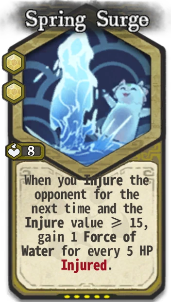
Spring Surge
泉之涌Sigil Value 2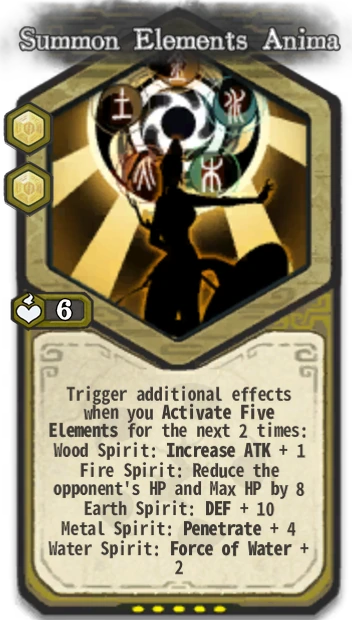
Summon Elements Anima
唤元灵Sigil Value 2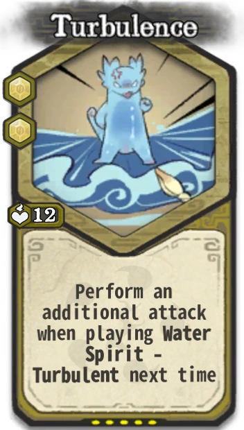
Turbulence
汹涌Sigil Value 2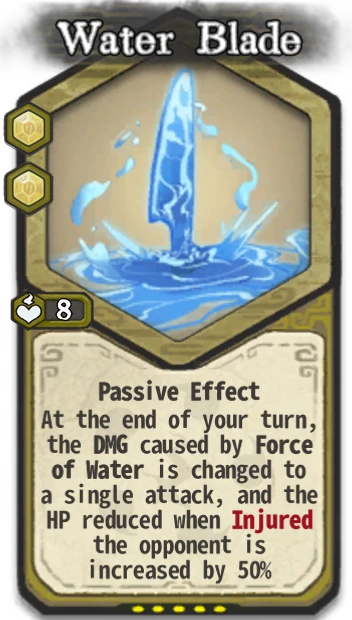
Water Blade
水刃Sigil Value 2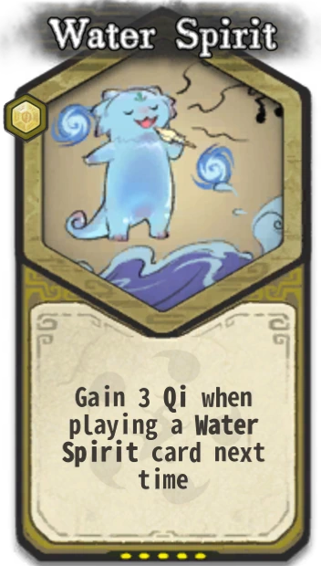
Water Spirit
水之灵Sigil Value 1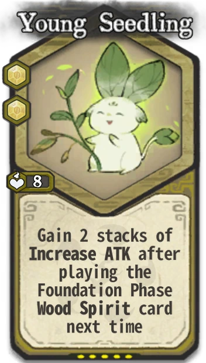
Young Seedling
初苗Sigil Value 2
Blood Shadow Agility
血影遁Sigil Value 2
Break Free
挣脱Sigil Value 1
Break Limit
破限Sigil Value 1
Chase Fierce Attack
追猛攻Sigil Value 2
Crash Fist Power
崩拳劲Sigil Value 1
Cultivate Unwavering Soul
修玄心Sigil Value 2
Defensive Posture
守势Sigil Value 1
Elusive
迷踪Sigil Value 1
Embrace Styx Moon
拥冥月Sigil Value 3
Fist Training
锻拳Sigil Value 1
Fist Wind
拳风Sigil Value 1
Imitate Heaven and Earth
法天象地Sigil Value 3
Inch Force
寸劲Sigil Value 2
Invoke Nether Spirit
引冥灵Sigil Value 1
Lure Enemy
诱敌Sigil Value 2
Majestic Momentum
磅礴势Sigil Value 3
Mechanism Leopard
机关豹Sigil Value 1
Mechanism Lion
机关狮Sigil Value 1
Mechanism Tiger
机关虎Sigil Value 1
Nether Heart
冥心Sigil Value 2
Nether Momentum
冥之势Sigil Value 2
Resist Xuan
御玄Sigil Value 1
Resurrection
返生Sigil Value 1
Scarlet Blood Rage
赤血怒Sigil Value 3
Shatter Xuan Demon
破玄魔Sigil Value 2
Solid Physique
坚体魄Sigil Value 2
Surge Spiritual Qi
涌灵炁Sigil Value 2
Suspend Momentum
悬气势Sigil Value 1
Temper Nether Soul
锻冥魄Sigil Value 1
Training Mechanism
训练机关Sigil Value 1
Unfold Spirit Wings
展灵翼Sigil Value 2
Xuan Healing
玄疗Sigil Value 1No sigils match these filters.